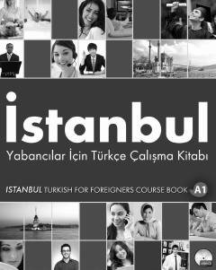

İYChet elliklar uchun turk tili A1 darajasidagi amaliy mashqlar to'plami.
Ushbu kitob chet elliklar uchun turk tilini o'rgatishga mo'ljallangan kompleks o'quv qo'llanmasining A1 darajasidagi mashqlar to'plamidir. Unda kundalik hayotda kerak bo'ladigan asosiy grammatik qoidalar, so'z boyligi va muloqot ko'nikmalarini rivojlantiruvchi mashqlar jamlangan.